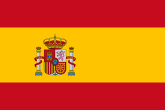

‹Studiază în Spania 
Spania este o alegere populară pentru studenții străini care caută o educație universitară de înaltă calitate la un preț foarte rezonabil. Țara din Europa de Vest oferă multe opțiuni de studiu pentru licențe, masterate și doctorate.
Spania este una dintre cele mai populare destinații turistice din Europa, și din motive întemeiate. Situată pe peninsula Iberică și înconjurată de Franța și Portugalia, Spania este o țară frumoasă, cu o istorie îndelungată și o cultură bogată, cunoscută pentru arhitectura sa, mâncarea și climatul minunat. Țara este compusă din mai multe regiuni semi-autonome, fiecare cu o cultură distinctă și uneori chiar o limbă locală. În Spania, poți găsi orice peisaj, de la plaje până la munți înalți - cu climate corespunzătoare. Există universități istorice și moderne din care poți alege, în orașe mari și mici, în fiecare parte a țării.
Există un număr mare de universități în Spania, multe dintre ele având o reputație excelentă la nivel internațional și clasându-se sus în clasamentele internaționale. Deși majoritatea universităților din Spania se concentrează pe predarea în spaniolă, tendința indică că se oferă tot mai multe programe de studii în limba engleză.
Unele dintre cele mai remarcabile universități publice spaniole includ Universitatea din Barcelona, Universitatea Complutense din Madrid și Universitatea Autonomă din Madrid.
Dacă te gândești să obții o diplomă în afaceri, Spania ar putea fi locul potrivit pentru tine: Spania găzduiește multe școli de afaceri de prestigiu, inclusiv 3 dintre cele mai bune 10 școli de afaceri din Europa: IESE Business School, IE Business School și Esade Business School. Aceste instituții extrem de respectate au dat naștere multor manageri de top internaționali.
Vestea bună pentru studenți: Taxele de școlarizare în Spania sunt printre cele mai scăzute din Europa. Taxele de școlarizare pentru programele de licență variază între 750 EUR și 2.500 EUR pe an, iar taxele de școlarizare pentru programele de masterat sunt în jur de 1.000 - 3.500 EUR pe an - ceea ce face din Spania o destinație ieftină pentru studenții internaționali. Universitățile private își stabilesc propriile taxe, care pot ajunge până la 20.000 EUR pe an.
Costul vieții în Spania variază în funcție de locație, dar în general este ușor să trăiești bine în Spania cu un buget de student. Mâncarea este ieftină și de înaltă calitate, iar există multe magazine de îmbrăcăminte la modă și ieftine. Cu toate acestea, poate fi costisitor să găsești cazare în orașe mari precum Madrid și Barcelona. Dacă bugetul tău este foarte limitat, poți lua în considerare orașe mai ieftine precum Valencia sau Sevilla. Și amintește-ți, transportul public în Spania este eficient și ieftin, astfel încât vei putea experimenta tot ceea ce are de oferit țara, indiferent de locul în care alegi să-ți bazezi studiile.
Deși poți alege dintr-un număr mare de programe de studiu în limba engleză în Spania, ar putea fi util să-ți îmbunătățești abilitățile lingvistice înainte și în timpul șederii tale acolo. Acest lucru îți va face mult mai ușor să interacționezi cu localnicii și te va echipa și cu a patra limbă cea mai vorbită din lume! Pentru anumite regiuni, precum Catalonia (și capitala sa Barcelona), nu strică să înveți cel puțin câteva fraze în dialectul regional (catalan în acest caz).
Cu toate acestea, viața ca student în Spania este o experiență fără egal. Vei găsi mulți prieteni în vibrantă și diversificata comunitate studențească a țării. Studenții spanioli lucrează din greu, dar găsesc mult timp pentru distracție. Dacă planifici să ieși în oraș noaptea, asigură-te că iei o siestă în timpul după-amiezii - majoritatea cluburilor nu se deschid nici măcar până după miezul nopții și prietenii tăi vor